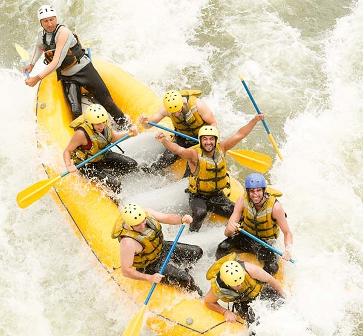

White Water Rafting Co. began in 2014 when a handful of Gulu river guides
pooled their savings and bought a single raft. Back then, the Nile's rapids
belonged almost entirely to visiting expeditions — local families had no way
onto the water. That first season carried forty guests down the river. By the
second, word had spread far enough that we needed a second raft, and then a
third.

Today our guides run three scheduled trips a day, from the gentle Family Float
to the Full-Day Extreme Challenge, plus overnight camping on the riverbank.
Sarah Namono leads a team of certified guides, and every trip still includes
gear, safety briefings, and river permits. The fleet has grown and the guest
list has grown with it, but the promise from that first season hasn't changed:
small groups, local guides, and a day on the water you'll remember.